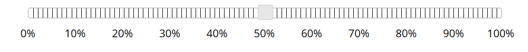
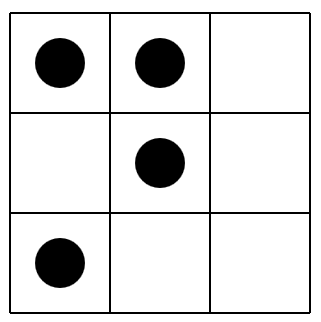

<!doctype html>
<html>
  <head>
    <script src="js/jquery.min.js"></script>
    <script src="js/jquery-ui.min.js"></script>
	<script src="js/snap.svg-min.js"></script>
    <script src="../jspsych.js"></script>
	<script src="../plugins/jspsych-dotWMTask.js"></script>
	<script src="../plugins/jspsych-single-stim.js"></script>
    <script src="../plugins/jspsych-similarity_for_cr_wm.js"></script>
	<script src="../plugins/jspsych-text.js"></script>
	<script src="../plugins/jspsych-instructions_DE.js"></script>
    <link rel="stylesheet" href="css/jquery-ui.css"></link>
    <link rel="stylesheet" href="../css/jspsych.css"></link>
    <style>
      img { width: 300px; }
    </style>
  </head>
  <body>
    <div id="jspsych-target"></div>
  </body>
  <script>

var timeline = [];

var stimlist = [];
var stimlistModus = [];
var stimlistCode = [];
var stimlistNA = [];

var n_circles = 4;
var configs = [];
var stimuli_dots = [];
  
/*Zuordnung & Randomisierung:*/

var txt1 = "";
var txt2 = "";
var txt3 = "";
var txt4 = "";
var txt5 = "";
var txt6 = "";
var txt7 = "";
var txt8 = "";
var mp = ["p_q", "p_nq"];
var mt = ["nq_np", "nq_p"];
var ac = ["q_p", "q_np"];
var da = ["np_nq", "np_q"];
var P = [1, 2, 3, 4];
var i;
var B1 = [];
var B2 = [];

for (i in P) {
var BA = [];
var BB = [];

var smp = jsPsych.randomization.shuffle(mp);
var smt = jsPsych.randomization.shuffle(mt);
var sac = jsPsych.randomization.shuffle(ac);
var sda = jsPsych.randomization.shuffle(da);

    txt1 = P[i] + smp[0];
    txt2 = P[i] + smt[0];
	txt3 = P[i] + sac[0];
	txt4 = P[i] + sda[0];
	txt5 = P[i] + smp[1];
    txt6 = P[i] + smt[1];
	txt7 = P[i] + sac[1];
	txt8 = P[i] + sda[1];
	
BA.push(txt1);
BA.push(txt2);
BA.push(txt3);
BA.push(txt4);
BB.push(txt5);
BB.push(txt6);
BB.push(txt7);
BB.push(txt8);  

var sBA = jsPsych.randomization.shuffle(BA);
var sBB = jsPsych.randomization.shuffle(BB);

B1.push(sBA);
B2.push(sBB);
}

sB1 = jsPsych.randomization.shuffle(B1);
sB2 = jsPsych.randomization.shuffle(B2);
stimlistCode.push(sB1);
stimlistCode.push(sB2);


//Creating Array only with strings (NoArrays):

var stimlistNA = [];


	for (i= 0; i < 4; i++) {
		for (j= 0; j < 4; j++) {
		xi = sB1[i];
		yj = xi[j];
		stimlistNA.push(yj);
		}
	}
	
	for (i= 0; i < 4; i++) {
		for (j= 0; j < 4; j++) {
		xi = sB2[i];
		yj = xi[j];
		stimlistNA.push(yj);
		}
	}
	
//document.getElementById("demo2").innerHTML = stimlistNA;

	
//Decodierung für Präsentation:
for (i= 0; i < stimlistNA.length; i++) {
	xi = stimlistNA[i];
	if (xi == "1p_q") {
	stimlist.push("<p>Regel: Wenn ein Raubtier Hunger hat, dann geht es auf Suche nach Beute.</p><p> Beobachtung: Das Raubtier hat Hunger.</p>"+
	"<p> Wie gross ist die Wahrscheinlichkeit, dass es auf Suche nach Beute geht?</p>");
	} else if (xi === "1p_nq") {
	stimlist.push("<p>Regel: Wenn ein Raubtier Hunger hat, dann geht es auf Suche nach Beute.</p><p> Beobachtung: Das Raubtier hat Hunger.</p>"+
	"<p> Wie gross ist die Wahrscheinlichkeit, dass es NICHT auf Suche nach Beute geht?</p>");
	} else if (xi === "1nq_np") {
	stimlist.push("<p>Regel: Wenn ein Raubtier Hunger hat, dann geht es auf Suche nach Beute.</p><p> Beobachtung: Das Raubtier geht NICHT auf Suche nach Beute.</p>"+
	"<p> Wie gross ist die Wahrscheinlichkeit, dass es KEINEN Hunger hat?</p>");
	} else if (xi === "1nq_p") {
	stimlist.push("<p>Regel: Wenn ein Raubtier Hunger hat, dann geht es auf Suche nach Beute.</p><p> Beobachtung: Das Raubtier geht NICHT auf Suche nach Beute.</p>"+
	"<p> Wie gross ist die Wahrscheinlichkeit, dass es Hunger hat?</p>");
	} else if (xi === "1q_p") {
	stimlist.push("<p>Regel: Wenn ein Raubtier Hunger hat, dann geht es auf Suche nach Beute.</p><p> Beobachtung: Das Raubtier geht auf Suche nach Beute.</p>"+
	"<p> Wie gross ist die Wahrscheinlichkeit, dass es Hunger hat?</p>");
	} else if (xi === "1q_np") {
	stimlist.push("<p>Regel: Wenn ein Raubtier Hunger hat, dann geht es auf Suche nach Beute.</p><p> Beobachtung: Das Raubtier geht auf Suche nach Beute.</p>"+
	"<p> Wie gross ist die Wahrscheinlichkeit, dass es KEINEN Hunger hat?</p>");
	} else if (xi === "1np_nq") {
	stimlist.push("<p>Regel: Wenn ein Raubtier Hunger hat, dann geht es auf Suche nach Beute.</p><p> Beobachtung: Das Raubtier hat KEINEN Hunger.</p>"+
	"<p> Wie gross ist die Wahrscheinlichkeit, dass es NICHT auf Suche nach Beute geht?</p>");
	} else if (xi === "1np_q") {
	stimlist.push("<p>Regel: Wenn ein Raubtier Hunger hat, dann geht es auf Suche nach Beute.</p><p> Beobachtung: Das Raubtier hat KEINEN Hunger.</p>"+
	"<p> Wie gross ist die Wahrscheinlichkeit, dass es auf Suche nach Beute geht?</p>");
	} else if (xi === "2p_q") {
	stimlist.push("<p>Regel: Wenn ein Ballon mit einer Nadel gestochen wurde, dann verliert er schnell an Luft.</p>"+
	"<p> Beobachtung: Ein Ballon wurde mit einer Nadel gestochen.</p><p> Wie gross ist die Wahrscheinlichkeit, dass er schnell an Luft verliert?</p>");
	} else if (xi === "2p_nq") {
	stimlist.push("<p>Regel: Wenn ein Ballon mit einer Nadel gestochen wurde, dann verliert er schnell an Luft.</p>"+
	"<p> Beobachtung: Ein Ballon wurde mit einer Nadel gestochen.</p><p> Wie gross ist die Wahrscheinlichkeit, dass er NICHT schnell an Luft verliert?</p>");
	} else if (xi === "2nq_np") {
	stimlist.push("<p> Wenn ein Ballon mit einer Nadel gestochen wurde, dann verliert er schnell an Luft.</p>"+
	"<p> Beobachtung: Ein Ballon verliert NICHT schnell an Luft.</p><p> Wie gross ist die Wahrscheinlichkeit, dass er NICHT mit einer Nadel gestochen wurde?</p>");
	} else if (xi === "2nq_p") {
	stimlist.push("<p> Wenn ein Ballon mit einer Nadel gestochen wurde, dann verliert er schnell an Luft.</p>"+
	"<p> Beobachtung: Ein Ballon verliert NICHT schnell an Luft.</p><p> Wie gross ist die Wahrscheinlichkeit, dass er mit einer Nadel gestochen wurde?</p>");
	} else if (xi === "2q_p") {
	stimlist.push("<p> Wenn ein Ballon mit einer Nadel gestochen wurde, dann verliert er schnell an Luft.</p>"+
	"<p> Beobachtung: Ein Ballon verliert schnell an Luft.</p><p> Wie gross ist die Wahrscheinlichkeit, dass er mit einer Nadel gestochen wurde?</p>");
	} else if (xi === "2q_np") {
	stimlist.push("<p>Regel: Wenn ein Ballon mit einer Nadel gestochen wurde, dann verliert er schnell an Luft.</p>"+
	"<p> Beobachtung: Ein Ballon verliert schnell an Luft.</p><p> Wie gross ist die Wahrscheinlichkeit, dass er NICHT mit einer Nadel gestochen wurde?</p>");
	} else if (xi === "2np_nq") {
	stimlist.push("<p>Regel: Wenn ein Ballon mit einer Nadel gestochen wurde, dann verliert er schnell an Luft.</p>"+
	"<p> Beobachtung: Ein Ballon wurde NICHT mit einer Nadel gestochen.</p><p> Wie gross ist die Wahrscheinlichkeit, dass er NICHT schnell an Luft verliert?</p>");
	} else if (xi === "2np_q") {
	stimlist.push("<p>Regel: Wenn ein Ballon mit einer Nadel gestochen wurde, dann verliert er schnell an Luft.</p>"+
	"<p> Beobachtung: Ein Ballon wurde NICHT mit einer Nadel gestochen.</p><p> Wie gross ist die Wahrscheinlichkeit, dass er schnell an Luft verliert?</p>");
	} else if (xi === "3p_q") {
	stimlist.push("<p>Regel: Wenn ein M&aumldchen Geschlechtsverkehr vollzogen hat, dann ist es schwanger.</p>"+
	"<p> Beobachtung: Ein M&aumldchen hat Geschlechtsverkehr vollzogen.</p><p> Wie gross ist die Wahrscheinlichkeit, dass es schwanger ist? </p>");
	} else if (xi === "3p_nq") {
	stimlist.push("<p>Regel: Wenn ein M&aumldchen Geschlechtsverkehr vollzogen hat, dann ist es schwanger.</p>"+
	"<p> Beobachtung: Ein M&aumldchen hat Geschlechtsverkehr vollzogen.</p><p> Wie gross ist die Wahrscheinlichkeit, dass es NICHT schwanger ist?</p>");
	} else if (xi === "3nq_np") {
	stimlist.push("<p>Regel: Wenn ein M&aumldchen Geschlechtsverkehr vollzogen hat, dann ist es schwanger.</p>"+
	"<p> Beobachtung: Ein M&aumldchen ist NICHT schwanger.</p><p> Wie gross ist die Wahrscheinlichkeit, dass es KEINEN Geschlechtsverkehr vollzogen hat?</p>");
	} else if (xi === "3nq_p") {
	stimlist.push("<p>Regel: Wenn ein M&aumldchen Geschlechtsverkehr vollzogen hat, dann ist es schwanger.</p>"+
	"<p> Beobachtung: Ein M&aumldchen ist NICHT schwanger.</p><p> Wie gross ist die Wahrscheinlichkeit, dass es Geschlechtsverkehr vollzogen hat?</p>");
	} else if (xi === "3q_p") {
	stimlist.push("<p>Regel: Wenn ein M&aumldchen Geschlechtsverkehr vollzogen hat, dann ist es schwanger.</p>"+
	"<p> Beobachtung: Ein M&aumldchen ist schwanger.</p><p> Wie gross ist die Wahrscheinlichkeit, dass es Geschlechtsverkehr vollzogen hat?</p>");
	} else if (xi === "3q_np") {
	stimlist.push("<p>Regel: Wenn ein M&aumldchen Geschlechtsverkehr vollzogen hat, dann ist es schwanger.</p>"+
	"<p> Beobachtung: Ein M&aumldchen ist schwanger.</p><p> Wie gross ist die Wahrscheinlichkeit, dass es KEINEN Geschlechtsverkehr vollzogen hat?</p>");
	} else if (xi === "3np_nq") {
	stimlist.push("<p>Regel: Wenn ein M&aumldchen Geschlechtsverkehr vollzogen hat, dann ist es schwanger.</p>"+
	"<p> Beobachtung: Ein M&aumldchen hat KEINEN Geschlechtsverkehr vollzogen.</p><p> Wie gross ist die Wahrscheinlichkeit, dass es NICHT schwanger ist?</p>");
	} else if (xi === "3np_q") {
	stimlist.push("<p>Regel: Wenn ein M&aumldchen Geschlechtsverkehr vollzogen hat, dann ist es schwanger.</p>"+
	"<p> Beobachtung: Ein M&aumldchen hat KEINEN Geschlechtsverkehr vollzogen.</p><p> Wie gross ist die Wahrscheinlichkeit, dass es schwanger ist?</p>");
	} else if (xi === "4p_q") {
	stimlist.push("<p>Regel: Wenn eine Person viel Cola trinkt, dann nimmt sie an Gewicht zu.</p>"+
	"<p> Beobachtung: Eine Person trinkt viel Cola.</p><p> Wie gross ist die Wahrscheinlichkeit, dass sie an Gewicht zunimmt?</p>");
	} else if (xi === "4p_nq") {
	stimlist.push("<p>Regel: Wenn eine Person viel Cola trinkt, dann nimmt sie an Gewicht zu.</p>"+
	"<p> Beobachtung: Eine Person trinkt viel Cola.</p><p>Wie gross ist die Wahrscheinlichkeit, dass sie NICHT an Gewicht zunimmt?</p>");
	} else if (xi === "4nq_np") {
	stimlist.push("<p>Regel: Wenn eine Person viel Cola trinkt, dann nimmt sie an Gewicht zu.</p>"+
	"<p> Beobachtung: Eine Person nimmt NICHT an Gewicht zu.</p><p> Wie gross ist die Wahrscheinlichkeit, dass sie NICHT viel Cola trinkt?</p>");
	} else if (xi === "4nq_p") {
	stimlist.push("<p>Regel: Wenn eine Person viel Cola trinkt, dann nimmt sie an Gewicht zu.</p>"+
	"<p> Beobachtung: Eine Person nimmt NICHT an Gewicht zu.</p><p> Wie gross ist die Wahrscheinlichkeit, dass sie viel Cola trinkt?</p>");
	} else if (xi === "4q_p") {
	stimlist.push("<p>Regel: Wenn eine Person viel Cola trinkt, dann nimmt sie an Gewicht zu.</p>"+
	"<p> Beobachtung: Eine Person nimmt an Gewicht zu.</p><p>Wie gross ist die Wahrscheinlichkeit, dass sie viel Cola trinkt?</p>");
	} else if (xi === "4q_np") {
	stimlist.push("<p>Regel: Wenn eine Person viel Cola trinkt, dann nimmt sie an Gewicht zu.</p>"+
	"<p> Beobachtung: Eine Person nimmt an Gewicht zu.</p><p> Wie gross ist die Wahrscheinlichkeit, dass sie NICHT viel Cola trinkt?</p>");
	} else if (xi === "4np_nq") {
	stimlist.push("<p>Regel: Wenn eine Person viel Cola trinkt, dann nimmt sie an Gewicht zu.</p>"+
	"<p> Beobachtung: Eine Person trinkt NICHT viel Cola.</p><p> Wie gross ist die Wahrscheinlichkeit, dass sie NICHT an Gewicht zunimmt?</p>");
	} else {
	stimlist.push("<p>Regel: Wenn eine Person viel Cola trinkt, dann nimmt sie an Gewicht zu.</p>"+
	"<p> Beobachtung: Eine Person trinkt NICHT viel Cola.</p><p> Wie gross ist die Wahrscheinlichkeit, dass sie an Gewicht zunimmt?</p>");
	} 
}


//Decodierung für Daten:
for (i= 0; i < stimlistNA.length; i++) {
	xi = stimlistNA[i];
	if (xi === "1p_q") {
	stimlistModus.push("1_MP");
	} else if (xi === "1p_nq") {
	stimlistModus.push("1_MP_'");
	} else if (xi === "1nq_np") {
	stimlistModus.push("1_MT");
	} else if (xi === "1nq_p") {
	stimlistModus.push("1_MT_'");
	} else if (xi === "1q_p") {
	stimlistModus.push("1_AC");
	} else if (xi === "1q_np") {
	stimlistModus.push("1_AC_'");
	} else if (xi === "1np_nq") {
	stimlistModus.push("1_DA");
	} else if (xi === "1np_q") {
	stimlistModus.push("1_DA_'");
	} else if (xi === "2p_q") {
	stimlistModus.push("2_MP");
	} else if (xi === "2p_nq") {
	stimlistModus.push("2_MP_'");
	} else if (xi === "2nq_np") {
	stimlistModus.push("2_MT");
	} else if (xi === "2nq_p") {
	stimlistModus.push("2_MT_'");
	} else if (xi === "2q_p") {
	stimlistModus.push("2_AC");
	} else if (xi === "2q_np") {
	stimlistModus.push("2_AC_'");
	} else if (xi === "2np_nq") {
	stimlistModus.push("2_DA");
	} else if (xi === "2np_q") {
	stimlistModus.push("2_DA_'");
	} else if (xi === "3p_q") {
	stimlistModus.push("3_MP");
	} else if (xi === "3p_nq") {
	stimlistModus.push("3_MP_'");
	} else if (xi === "3nq_np") {
	stimlistModus.push("3_MT");
	} else if (xi === "3nq_p") {
	stimlistModus.push("3_MT_'");
	} else if (xi === "3q_p") {
	stimlistModus.push("3_AC");
	} else if (xi === "3q_np") {
	stimlistModus.push("3_AC_'");
	} else if (xi === "3np_nq") {
	stimlistModus.push("3_DA");
	} else if (xi === "3np_q") {
	stimlistModus.push("3_DA_'");
	} else if (xi === "4p_q") {
	stimlistModus.push("4_MP");
	} else if (xi === "4p_nq") {
	stimlistModus.push("4_MP_'");
	} else if (xi === "4nq_np") {
	stimlistModus.push("4_MT");
	} else if (xi === "4nq_p") {
	stimlistModus.push("4_MT_'");
	} else if (xi === "4q_p") {
	stimlistModus.push("4_AC");
	} else if (xi === "4q_np") {
	stimlistModus.push("4_AC_'");
	} else if (xi === "4np_nq") {
	stimlistModus.push("4_DA");
	} else {
	stimlistModus.push("4_DA_'");
	}
}

//document.getElementById("demo3").innerHTML = stimlistModus;


//*****************************************************//////////////////*****************************************************
//*****************************************************// Instuctons:  //*****************************************************
//*****************************************************//////////////////*****************************************************

/*

var instr1 = {
	type: 'instructions',
	show_clickable_nav: true,
	pages: [
	"<p style='text-align: center; text-decoration: underline;  line-height: 1.8;font-size: 150%'>Herzlich willkommen zum Experiment!</p>"+
	"<p>Vielen Dank, dass Sie sich die Zeit nehmen, um an unserem Versuch teilzunehmen. "+
	"Bei den folgenden Aufgaben pr&aumlsentieren wir Ihnen jeweils eine Regel sowie eine damit zusammenh&aumlngende Beobachtung. Ihre Aufgabe ist es "+
	"einzusch&aumltzen, mit welcher Wahrscheinlichkeit eine bestimmte Folgerung zutrifft.</p>" +
	"<p style='line-height: 3.8; text-decoration: underline;'>Ein Beispiel:</p><p style='line-height: 0.5;'> Regel: Wenn eine Person Grippe hat, dann hat sie Fieber.</p>"+
	"<p style='line-height: 0.5;'>Beobachtung: Eine Person hat KEINE Grippe.</p>"+
	"<p style='line-height: 0.5;'>Wie gross sch&aumltzen Sie die Wahrscheinlichkeit, dass die Person Fieber hat? </p>"+
	"<p>Sie m&uumlssen Ihre Bewertung jeweils auf einer Skala von 0 bis 100 Prozent angeben:</p><p></img>"+
	"<ul><li>Wenn Sie meinen, dass die Person auf keinen Fall Fieber hat, dann markieren Sie 0%.</li>"+
	"<li>Wenn Sie meinen, dass die Person in jedem Fall Fieber hat, dann markieren Sie 100%</li>"+
	"<li>Wenn Sie meinen, dass die Person mit einer Wahrscheinlichkeit von zum Beispiel 85 Prozent Fieber hat, dann markieren Sie 85%.</li></ul>",
	"<p style='text-decoration: underline;line-height: 3.5;'>Noch ein Hinweis:</p><p>F&uumlr jede Beobachtung wird die Antwort zweimal erfragt und zwar, verteilt auf zwei "+
	"Aufgabenbl&oumlcke, einmal <b>positiv</b> formuliert und einmal <b>negativ</b> formuliert.</p>"+
	"<p style='line-height: 3.8; text-decoration: underline;'>Ein Beispiel:</p>"+
	"<p style='text-indent: 50px; line-height: 0.5;'>Regel: Wenn eine Person Grippe hat, dann hat sie Fieber.</p>"+
	"<p style='text-indent: 50px; line-height: 0.5;'>Beobachtung: Eine Person hat Grippe.</p>"+
	"<p style='text-indent: 50px; line-height: 0.5;'>Wie gross sch&aumltzen Sie die Wahrscheinlichkeit, ...</p>"+
	"<p style='text-indent: 100px;'>. . . dass die Person Fieber hat? (<i>positive</i> Formulierung)</p>"+
	"<p style='text-indent: 100px;'>. . . dass die Person KEIN Fieber hat? (<i>negative</i> Formulierung)</p>"+
	"<p style='line-height: 7.8'>Damit soll eine zuverl&aumlssigere Sch&aumltzung der erfragten Wahrscheinlichkeit erreicht werden.</p>",
	"Zus&aumltzlich zu der vorher beschriebenen Aufgabe wird in einigen Durchg&aumlngen eine weitere Aufgabe pr&aumlsentiert, bei der Sie sich jeweils die <b>Position "+
	"von vier Punkten</b> in einem Gitter merken m&uumlssen.</p>"+
	"<div class='center-content'></img></div>"+
	"<p>Das Gitter mit den vier Punkten wird jeweils <b>vor</b> der Aufgabe zur Sch&aumltzung der"+
	" Wahrscheinlichkeit eingeblendet. Nachdem Sie Ihre Sch&aumltzung abgegeben haben,"+
	" wird ein leeres Gitter eingeblendet. In dieses leere Gitter k&oumlnnen Sie dann die Position der Punkte einzeichnen. "+
	"Dazu m&uumlssen Sie lediglich auf die Felder klicken, in denen Sie die Punkte einzeichnen wollen. Wenn Sie einen Punkt wieder wegmachen wollen, klicken Sie einfach "+
	"nochmals auf ihn.</p><p>Die Punkte kommen nur in der H&aumllfte der Durchg&aumlnge vor. In der anderen H&aumllfte wird Ihnen lediglich ein leeres Gitter"+
	"gezeigt, damit die Durchg&aumlnge vergleichbar sind.</p>"+
	"<p>Um Ihnen das Ganze zu veranschaulichen, kommen nun drei &Uumlbungsdurchg&aumlnge. Bei den ersten zwei werden Sie sich die Position "+
	"der Punkte merken m&uumlssen, beim dritten &Uumlbungsdurchgang nicht (es erscheint nur ein leeres Gitter).</p>" +
	"<p style='line-height:3;'>Durch dr&uumlcken auf 'Weiter' gelangen Sie zu den &Uumlbungsdurchg&aumlngen.</p>"
	]
}
timeline.push(instr1);

*/

//*****************************************************//////////////////*****************************************************
//*****************************************************// Probetrials: //*****************************************************
//*****************************************************//////////////////*****************************************************
/*
var c1 = [0, 0, 1, 0, 1, 1, 0, 0, 1];
var s1 = jsPsych.plugins.dotWMTask.generate_stimulus(4, c1);
var c2 = [1, 0, 1, 0, 0, 1, 1, 0, 0];
var s2 = jsPsych.plugins.dotWMTask.generate_stimulus(4, c2);
var c3 = [0, 0, 0, 0, 0, 0, 0, 0, 0];
var s3 = jsPsych.plugins.dotWMTask.generate_stimulus(4, c3); 
var cr1 = '<p>Regel: Wenn jeder Tag so ist wie er heisst, kommt am Samstag das Sams.</p><p> Beobachtung: Jeder Tag ist so, wie er heisst.</p><p> Wie gross ist die Wahrscheinlichkeit, dass am Samstag das Sams kommt?</p>';
var cr2 = "<p>Regel: Wenn jeder Tag so ist wie er heisst, kommt am Samstag das Sams.</p><p> Beobachtung: Jeder Tag ist nicht so, wie er heisst.</p><p> Wie gross ist die Wahrscheinlichkeit, dass am Samstag das Sams nicht kommt?</p>";
var cr3 = "<p>Regel: Wenn jeder Tag so ist wie er heisst, kommt am Samstag das Sams.</p><p> Beobachtung: Am Samstag kommt das Sams.</p><p> Wie gross ist die Wahrscheinlichkeit, dass jeder Tag so ist, wie er heisst.</p>";
var cr = [cr1, cr2, cr3];


	var pb1_1 = {
		type: 'single-stim',
		stimulus: s1,
		is_html: true,
		timing_response: 1000,
		response_ends_trial: false
	}
	timeline.push(pb1_1);


	var pb1_2 = {
		type: 'similarity',
		is_html: true,
		stimuli: [cr1],
		timing_first_stim: -1,
		intervals: 100,
		show_ticks: true,
		labels: ["0%", "10%", "20%", "30%", "40%", "50%", "60%", "70%", "80%", "90%", "100%"],
	}
	timeline.push(pb1_2);


	var pb1_3 = {
		type: 'dotWMTask',
		configuration: c1,
		editable: true,
		show_feedback: true,
		timing_feedback: 750,
		prompt: '<p>Klicken Sie auf die Felder, in denen im vorhergehenden Gitter die Punkte gezeigt wurden.</p>'+
		'<p>Durch dr&uumlcken auf "Weiter" startet der n&aumlchste Durchgang.</p>'
	}
	timeline.push(pb1_3);

	var pb2_1 = {
		type: 'single-stim',
		stimulus: s2,
		is_html: true,
		timing_response: 1000,
		response_ends_trial: false
	}
	timeline.push(pb2_1);


	var pb2_2 = {
		type: 'similarity',
		is_html: true,
		stimuli: [cr2],
		timing_first_stim: -1,
		intervals: 100,
		show_ticks: true,
		labels: ["0%", "10%", "20%", "30%", "40%", "50%", "60%", "70%", "80%", "90%", "100%"],
	}
	timeline.push(pb2_2);


	var pb2_3 = {
		type: 'dotWMTask',
		configuration: c2,
		editable: true,
		show_feedback: true,
		timing_feedback: 750,
		prompt: '<p>Klicken Sie auf die Felder, in denen im vorhergehenden Gitter die Punkte gezeigt wurden.</p>'+
		'<p>Durch dr&uumlcken auf "Weiter" startet der n&aumlchste Durchgang.</p>'
	}
	timeline.push(pb2_3);

	var pb3_1 = {
		type: 'single-stim',
		stimulus: s3,
		is_html: true,
		timing_response: 1000,
		response_ends_trial: false
	}
	timeline.push(pb3_1);


	var pb3_2 = {
		type: 'similarity',
		is_html: true,
		stimuli: [cr3],
		timing_first_stim: -1,
		intervals: 100,
		show_ticks: true,
		labels: ["0%", "10%", "20%", "30%", "40%", "50%", "60%", "70%", "80%", "90%", "100%"],
	}
	timeline.push(pb3_2);
	
	var pb3_3 = {
		type: 'single-stim',
		stimulus: s3,
		is_html: true,
		timing_response: 750,
		response_ends_trial: false,
	}
	timeline.push(pb3_3);
/*
*/

var Intro4 = {
	type: 'text',
	text: '<p>Nun geht es los mit den Test-Durchg&aumlngen.</p>' +
	'<p>Bitte bearbeiten Sie alle Durchg&aumlnge ohne Unterbruch und lesen Sie sich die Fragen jeweils sorgf&aumlltig durch. Es kommt keine Frage zweimal vor, '+
	'auch wenn das manchmal so scheinen mag. Es kommt sehr auf die <ins>Details</ins> der Formulierung an.</p>' +
	'<p style="line-height: 3">Dr&uumlcken Sie eine beliebige Taste, um zu starten.</p>'
}
timeline.push(Intro4);


//*****************************************************//////////////////*****************************************************
//*****************************************************//   Trials:    //*****************************************************
//*****************************************************//////////////////*****************************************************

for (k = 0; k < stimlistModus.length; k++) {			//3 nur zum korr., richtig: stimlist.length !!!
/* */   
//random selection of dots to show:
		var prelim_config = [0, 0, 1, 0, 1, 1, 0, 0, 1];
		var configuration = jsPsych.randomization.shuffle(prelim_config);
		
		configs.push(configuration);
		stimulus = jsPsych.plugins.dotWMTask.generate_stimulus(n_circles, configuration);
		stimuli_dots.push(stimulus);
	
//change configuration to 0 if no WML:


	if (stimlistModus[k] === "1_MP" || stimlistModus[k] === "1_MP_'" 
		|| stimlistModus[k] === "3_MP" || stimlistModus[k] === "3_MP_'"
		|| stimlistModus[k] === "1_AC" || stimlistModus[k] === "1_AC_'"
		|| stimlistModus[k] === "2_AC" || stimlistModus[k] === "2_AC_'"
		|| stimlistModus[k] === "2_MT" || stimlistModus[k] === "2_MT_'" 
		|| stimlistModus[k] === "4_MT" || stimlistModus[k] === "4_MT_'" 
		|| stimlistModus[k] === "3_DA" || stimlistModus[k] === "3_DA_'"
		|| stimlistModus[k] === "4_DA" || stimlistModus[k] === "4_DA_'") {
			configs[k] = [0, 0, 0, 0, 0, 0, 0, 0, 0];
			stimuli_dots[k] = jsPsych.plugins.dotWMTask.generate_stimulus(n_circles, configs[k]);
	}

}

for (k = 0; k < 3; k++) {	

// show target stimulus using single-stim plugin
	var stim_block = {
		type: 'single-stim',
		stimulus: stimuli_dots[k],
		is_html: true,
		timing_response: 1000,
		response_ends_trial: false
	}
	timeline.push(stim_block);

//show conditional
	var cr_trial = {
		type: 'similarity',
		is_html: true,
		stimuli: [stimlist[k]],
		timing_first_stim: -1,
		intervals: 100,
		show_ticks: true,
		data: {Modus: stimlistModus[k]},
		labels: ["0%", "10%", "20%", "30%", "40%", "50%", "60%", "70%", "80%", "90%", "100%"],
	}
	timeline.push(cr_trial);


//show empty grid to modify or not


	var test_block = {
		type: 'dotWMTask',
		configuration: configs[k],
		editable: true,
		show_feedback: false,
		timing_feedback: 750,
		prompt: '<p>Klicken Sie auf die Felder, in denen im vorhergehenden Gitter die Punkte gezeigt wurden.</p>'+
		'<p>Durch dr&uumlcken auf "Weiter" startet der n&aumlchste Durchgang.</p>'
	}

	
	
	var empty_block = {
		type: 'dotWMTask',
		configuration: configs[k],
		editable: true,
		show_feedback: false,
		timing_feedback: 750,
		prompt: '<p>Klicken Sie auf die Felder, in denen im vorhergehenden Gitter die Punkte gezeigt wurden.</p>'+
		'<p>Durch dr&uumlcken auf "Weiter" startet der n&aumlchste Durchgang.</p>'
	}
	


var if_node_test = {
    timeline: [test_block],
    conditional_function: function(){
		var data = jsPsych.data.getLastTrialData();
        if (data.Modus === "1_MP" || data.Modus === "1_MP_'" 
			|| data.Modus === "3_MP" || data.Modus === "3_MP_'"
			|| data.Modus === "1_AC" || data.Modus === "1_AC_'"
			|| data.Modus === "2_AC" || data.Modus === "2_AC_'"
			|| data.Modus === "2_MT" || data.Modus === "2_MT_'" 
			|| data.Modus === "4_MT" || data.Modus === "4_MT_'" 
			|| data.Modus === "3_DA" || data.Modus === "3_DA_'"
			|| data.Modus === "4_DA" || data.Modus === "4_DA_'") {
			return false;
		} else {
			return true;
		}
    }
}
timeline.push(if_node_test);

var if_node_empty = {
    timeline: [empty_block],
    conditional_function: function(){
        var data = jsPsych.data.getLastTrialData();
        if (data.Modus === "1_MP" || data.Modus === "1_MP_'" 
			|| data.Modus === "3_MP" || data.Modus === "3_MP_'"
			|| data.Modus === "1_AC" || data.Modus === "1_AC_'"
			|| data.Modus === "2_AC" || data.Modus === "2_AC_'"
			|| data.Modus === "2_MT" || data.Modus === "2_MT_'" 
			|| data.Modus === "4_MT" || data.Modus === "4_MT_'" 
			|| data.Modus === "3_DA" || data.Modus === "3_DA_'"
			|| data.Modus === "4_DA" || data.Modus === "4_DA_'") {
			return true;
		} else {
			return false;
		}
    }
}
timeline.push(if_node_empty);
/*		
var inter_block = {
	type: 'single-stim',
	is_html: true,
    stimulus: 'N&aumlchster Durchgang startet.'
	timing_response: 500,
	response_ends_trial: false
}

if (k !== 31) {
timeline.push(inter_block);
}

  
		*/

}	


  var vp_ID = jsPsych.randomization.randomID(6);
    jsPsych.data.addProperties({VP: vp_ID})
  var date = (new Date());
  var Datum = date.toUTCString();
	jsPsych.data.addProperties({Datum: Datum});

  
  jsPsych.init({
    display_element: $('#jspsych-target'),
    timeline: timeline,
	default_iti: 100,
    on_finish: function() {
	jsPsych.data.displayData();
	}
  });
  </script>
</html>